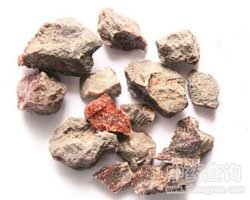

硇砂

拼音
Náo Shā
别名
紫硇砂、白硇砂、碱硇砂、红硇砂、藏脑、脑砂、淡硇砂
来源
药材有紫硇砂和白硇砂两种。紫硇砂为紫色食盐，白硇砂为含氯化铵类的一种矿石，通常称硇砂者一般指紫硇砂而言。全年可采，去杂质。白硇砂如由人工合成，其法：1.以氢氯酸与铵或铵的化合物作用而得；2.在氨水中加铁板浸渍（大部分为氯化亚铁）而得；3.索尔夫制碱法之副产品；4.以氨水作用于氯化钙而得。
生境分布
产青海、甘肃、新疆等地。
药材特点
等轴晶系。晶体一般呈柱状、纤维状及粒状。白色或淡灰。条痕为白色。玻璃光泽。透明或微透明。断口呈贝壳状。硬度1.5～2。比重1.52。性脆。多产于火山熔岩的岩穴内，有时与石炭、石盐伴生，当石炭燃烧时也可产生，成壳皮状覆于岩石表面。
性状
紫硇砂（碱硇砂、红硇砂、藏脑、脑砂）：为块状结晶体，多数呈立方形，大小不等，有棱角或凹凸不平，有明显不规则小孔。表面暗紫色或紫红色，稍有光泽，附有少量黄白色硫磺粉末。质重，以手摸之有凉感。坚而脆，断面平滑光亮。臭气浓，味咸，可溶于水。 白硇砂（淡硇砂）：为白色结晶体，呈粒状，不规则状或粉末状，有光泽。易溶于水。臭微，味咸而苦。
性味
咸、苦、辛，温。
功能主治
紫硇砂：软件，消积，散瘀消肿。用于经闭，癌肿；外用治目翳胬肉，痈肿疮毒。 白硇砂：化痰。用于咳嗽痰多。
用法用量
均为1～3分。外用适量，研末或水化，点敷患处。
化学成分
白硇砂主要含氯化铵。 纯氯化铵为无色结晶。近代硇砂，常用人工制作，纯度可以极高。紫硇砂主要含氯化钠。
药理作用
1：无药理作用数据
摘录
《全国中草药汇编》